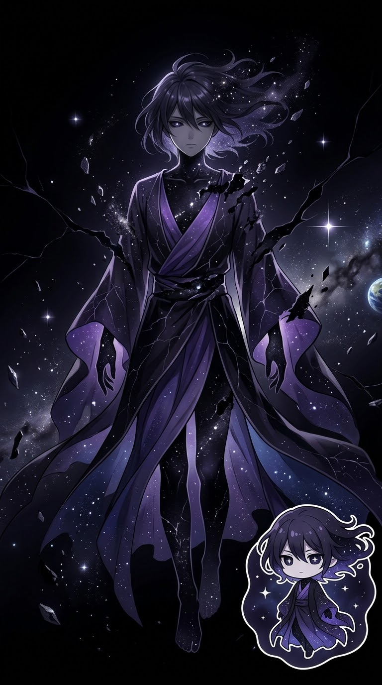
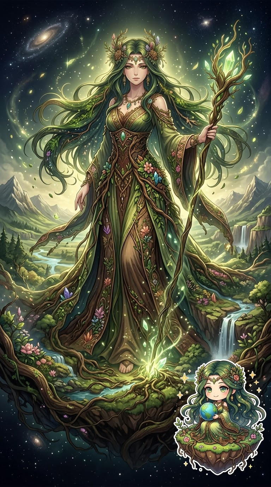
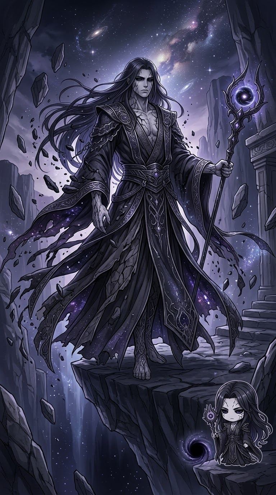
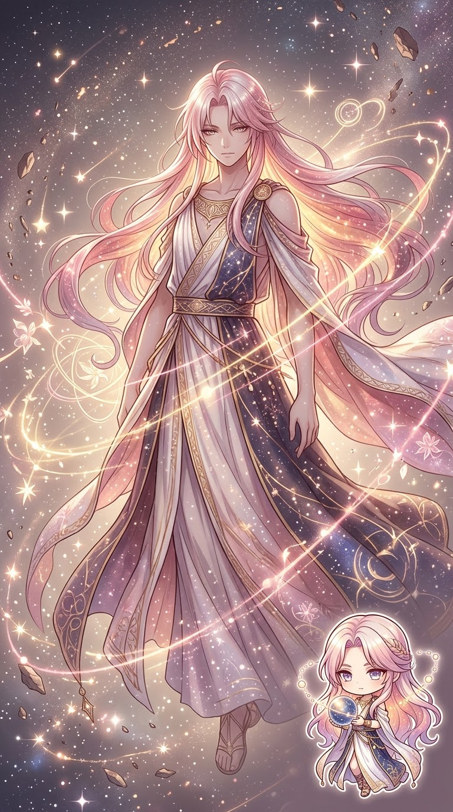
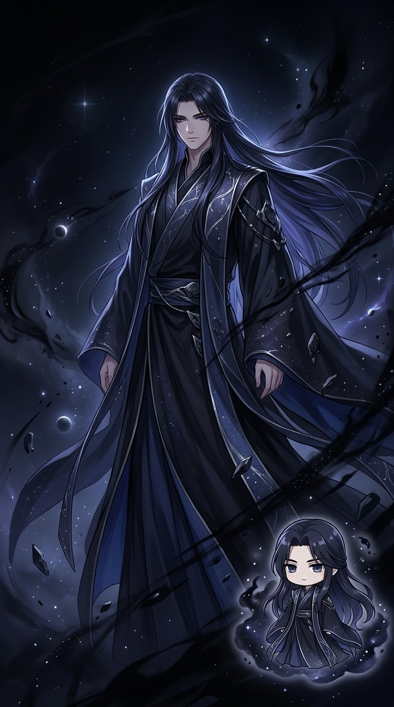
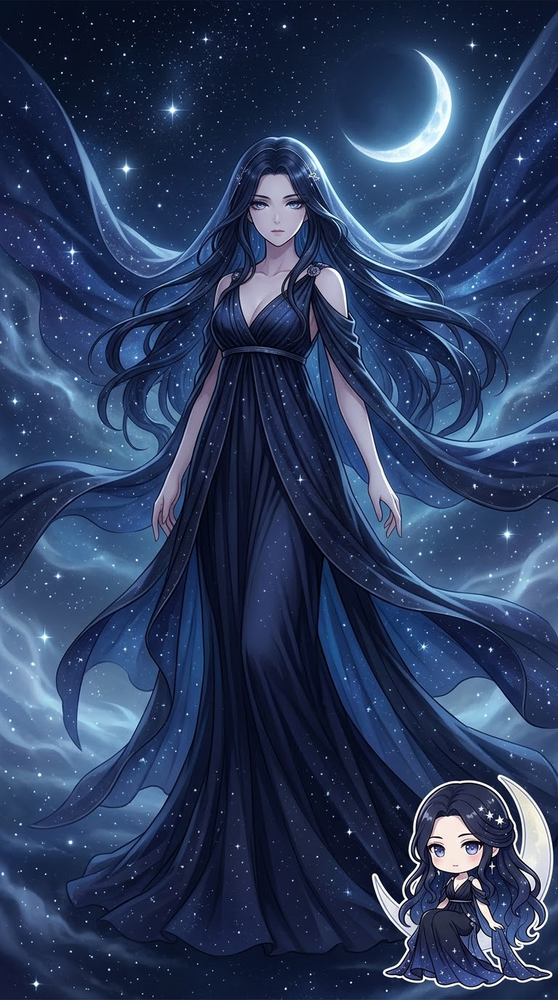
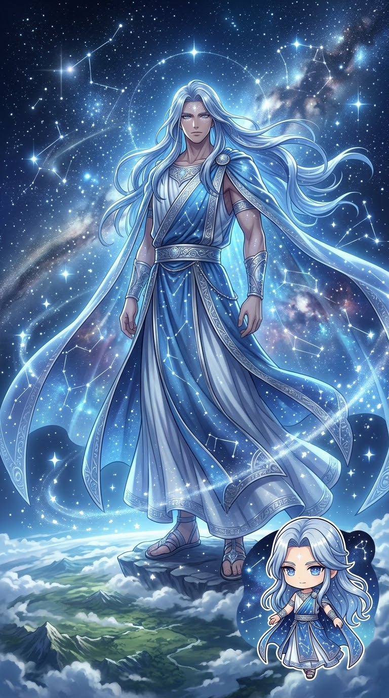
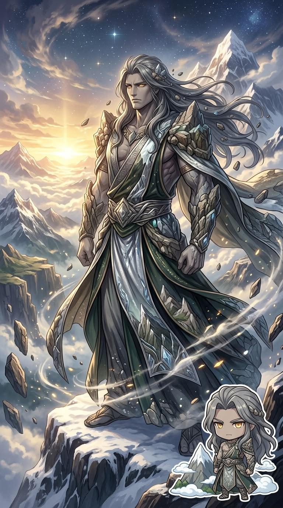
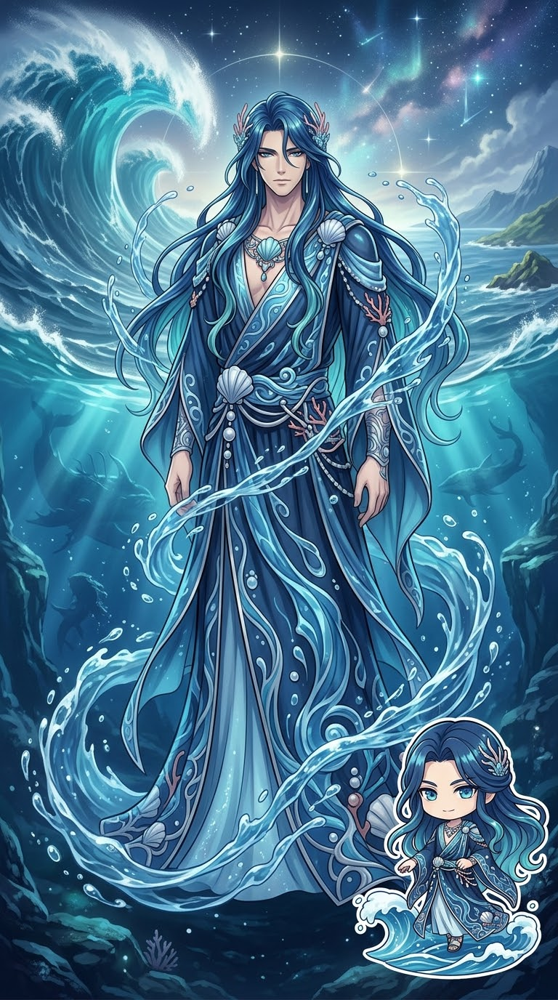

00 · GREEK MYTHOLOGY
Χάος｜卡俄斯｜Chaos
原初空隙與萬物展開的起點
在世界尚未有清楚的天地、海洋與秩序以前，卡俄斯首先出現在宇宙的開端。它不是單純的混亂，而是天地尚未分明的原初空隙，讓後來的存在有了展開的空間。
卡俄斯之後，厄瑞玻斯與倪克斯從它而生。由黑暗與黑夜開始，光明、白晝及更多宇宙力量逐漸出現，世界也一步步形成。
PRIMORDIAL GODS · THE BEGINNING OF THE COSMOS
在天地尚未分明之時，原初神逐步構成宇宙：空隙、大地、深淵、天空、黑夜與海洋，從這些力量開始，眾神的世代展開。
最初，卡俄斯出現。接著，大地蓋亞、深淵塔耳塔洛斯與促成生成的厄洛斯也進入宇宙。蓋亞生下天空、山脈與海洋；卡俄斯則生出黑暗厄瑞玻斯與黑夜倪克斯。當黑暗與黑夜結合，光明埃忒耳與白晝赫墨拉誕生，宇宙開始有了明暗交替。
原初神有些像具有人格的神祇，有些本身就是自然與宇宙的存在。當大地與天空結合，泰坦、獨眼巨人和百臂巨人相繼誕生，神話也從宇宙起源走向神族的權力更替。
PRIMORDIAL GODS ENCYCLOPEDIA
認識九位奠定早期宇宙秩序的重要原初神，以及他們如何開啟後來的神族故事。

00 · GREEK MYTHOLOGY
原初空隙與萬物展開的起點
在世界尚未有清楚的天地、海洋與秩序以前，卡俄斯首先出現在宇宙的開端。它不是單純的混亂，而是天地尚未分明的原初空隙，讓後來的存在有了展開的空間。
卡俄斯之後，厄瑞玻斯與倪克斯從它而生。由黑暗與黑夜開始，光明、白晝及更多宇宙力量逐漸出現，世界也一步步形成。

01 · GREEK MYTHOLOGY
大地母神，天地與眾神的根基
蓋亞是堅實的大地本身，也是能孕育生命的母神。她獨自生下天空烏拉諾斯、山脈俄瑞亞與海洋蓬托斯，讓天、地、山與海逐漸各有形體。
蓋亞與烏拉諾斯結合後，生下十二位泰坦、獨眼巨人與百臂巨人。後來她因烏拉諾斯壓制子女而協助克洛諾斯反抗，也曾在宙斯與泰坦的衝突中扮演關鍵角色。她既是眾神的母親，也會為了後代改變世界的局勢。

02 · GREEK MYTHOLOGY
宇宙最深處的深淵
塔耳塔洛斯既是原初存在，也是宇宙深處的可怕深淵。它遠在大地與天空之下，深遠得難以想像，象徵世界中最幽暗、最難以逃離的所在。
在後來的神話裡，塔耳塔洛斯成為囚禁強大敵人的地方。宙斯戰勝泰坦後，部分泰坦被關押於此，由百臂巨人看守。它與哈帝斯統治的亡者國度不同，更像是宇宙深處的牢獄。

03 · GREEK MYTHOLOGY
使生命結合、生成與繁衍的原初力量
最初的厄洛斯是促成萬物結合的原初力量。他讓不同的存在能彼此連結，使生成與繁衍得以發生，因此在宇宙形成之初就具有重要地位。
這位原初厄洛斯與後來常見、手持弓箭並使人墜入愛情的愛神形象並不完全相同。後世神話把愛與欲望描寫得更具人格，而早期的厄洛斯更像是推動生命與世界持續生成的力量。

04 · GREEK MYTHOLOGY
原初黑暗與幽暗之神
厄瑞玻斯由卡俄斯而生，代表深沉的黑暗與幽暗。他的名字也可用來稱呼冥界附近的陰暗地域，因此他既是黑暗的神格，也與亡者通往冥界的幽暗世界相連。
厄瑞玻斯與倪克斯結合，生下光明神埃忒耳與白晝神赫墨拉。這個家族象徵黑暗之中孕育出光與白晝，世界從幽暗走向明暗交替的秩序。

05 · GREEK MYTHOLOGY
黑夜女神，令眾神也敬畏的原初力量
倪克斯是黑夜的化身，從卡俄斯而生。她以黑暗籠罩天地，使萬物進入夜晚，也孕育出許多與命運、死亡、睡眠及夢境相關的神祇。
她的子女包括睡眠之神修普諾斯、死亡之神塔納托斯、夢神群與復仇女神等。倪克斯在神話中威嚴而神祕，連宙斯也不輕易與她為敵，突顯黑夜與命運力量的古老地位。

06 · GREEK MYTHOLOGY
天空之神，第一代泰坦的父親
烏拉諾斯由蓋亞獨自生下，成為覆蓋大地的天空。後來他與蓋亞結合，生下十二位泰坦、獨眼巨人與百臂巨人，天地間第一個強大的神族由此形成。
烏拉諾斯畏懼部分子女的力量，將他們壓制在蓋亞體內，使蓋亞痛苦不堪。蓋亞於是請求子女反抗，最終由克洛諾斯以鐮刀推翻父親。這場父子衝突開啟了泰坦掌權的時代，也預告了神王更替的循環。

07 · GREEK MYTHOLOGY
山脈的原初神格
俄瑞亞是蓋亞獨自生下的山脈之神。希臘神話中的山並非只是地形，而是具有自身神格的古老存在，承載著荒野、隱居之地與神祇活動的空間。
俄瑞亞不像奧林帕斯諸神那樣擁有大量個人冒險故事，但他代表大地隆起、山嶺形成的宇宙秩序。山脈也成為後來神祇、仙女與英雄故事的重要舞台。

08 · GREEK MYTHOLOGY
原初海洋之神
蓬托斯由蓋亞獨自生下，代表海洋的原初力量。與俄刻阿諾斯所象徵的環世大洋不同，蓬托斯更直接連結海水本身及其孕育生命的力量。
蓬托斯與蓋亞生下海神涅柔斯、陶瑪斯、福耳庫斯、刻托與歐律比亞等神祇，延伸出海中神族與許多海洋奇異生物的故事。海洋既能孕育生命，也藏著風暴、怪物與未知的危險。
THE FIRST DIVINE DYNASTY
烏拉諾斯與蓋亞的子女成為第一代泰坦。父親的恐懼、母親的反抗，以及克洛諾斯的崛起，讓宇宙進入新的統治時代。
認識第一代泰坦神 →